# Install required packages if not already installed
required_packages <- c("dplyr", "ggplot2", "forcats", "kableExtra", "readr", "ggtext")
new_packages <- required_packages[!(required_packages %in% installed.packages()[,"Package"])]
if(length(new_packages)) install.packages(new_packages)
# Load required packages
library(dplyr)
library(ggplot2)
library(forcats)
library(kableExtra)
library(readr)
library(ggtext) # Add ggtext for markdown supportggplot2 Fundamentals Example
Research Question
We had substantial missing data on depression/anxiety questions. For this reason, let’s focus on the relationship between location and binge drinking.
Workflow with ggplot2:
- Start with data
- Pick an aesthetic mapping
- Choose a geometric object
- Add statistical transformations
- Adjust finer details: scales, coordinate systems, faceting, etc.
Build this up, layer by layer.
Step 1: Data
Let’s load the data.
df_final <- readRDS(here::here("data", "processed", "cdc_prams_df_final.rds"))
df_final |>
glimpse()Rows: 1,222
Columns: 8
$ location_abbr <fct> AR, AR, AR, AR, AR, AR, AR, AR, A…
$ subgroup_cat <chr> "Adequacy of Prenatal care", "Ade…
$ subgroup <chr> "ADEQUATE PNC", "INADEQUATE PNC",…
$ depression_within_3_months_birth <dbl> NA, NA, NA, NA, NA, NA, NA, NA, N…
$ anxiety_within_3_months_birth <dbl> NA, NA, NA, NA, NA, NA, NA, NA, N…
$ binge_drinking_within_3_months_birth <dbl> 24.6, 12.6, 22.2, 36.0, 21.5, 24.…
$ alcohol_use_within_3_months_birth <dbl> 53.5, 28.7, 40.9, 54.1, 45.8, 49.…
$ location <fct> Arkansas, Arkansas, Arkansas, Ark…Let’s filter out missing data now to avoid warnings later.
df_binge_location <- df_final |>
filter(!is.na(binge_drinking_within_3_months_birth)) |>
select(location_abbr, subgroup_cat, subgroup, location, binge_drinking_within_3_months_birth)This isn’t actually enough. Remember, the data has sub groupings:
df_binge_location |>
select(subgroup_cat, subgroup) |>
distinct() |>
kable()| subgroup_cat | subgroup |
|---|---|
| Adequacy of Prenatal care | ADEQUATE PNC |
| Adequacy of Prenatal care | INADEQUATE PNC |
| Adequacy of Prenatal care | INTERMEDIATE PNC |
| Adequacy of Prenatal care | UNKNOWN PNC |
| Birth Weight | LBW (<=2500g) |
| Birth Weight | NBW (>2500g) |
| Income (years 2004 and beyond) | $10,000 to $24,999 |
| Income (years 2004 and beyond) | $25,000 to $49,999 |
| Income (years 2004 and beyond) | $50,000 or more |
| Income (years 2004 and beyond) | Less than $10,000 |
| Marital Status | MARRIED |
| Marital Status | OTHER |
| Maternal Age (3 Levels) | 20-29 yrs |
| Maternal Age (3 Levels) | 30+ yrs |
| Maternal Age (3 Levels) | <20 yrs |
| Maternal Age (4 Levels) | 20-24 yrs |
| Maternal Age (4 Levels) | 25-34 yrs |
| Maternal Age (4 Levels) | 35+ yrs |
| Maternal Age (4 Levels) | <20 yrs |
| Maternal Age - 18 to 44 years in groupings | Age 18 - 24 |
| Maternal Age - 18 to 44 years in groupings | Age 25 - 29 |
| Maternal Age - 18 to 44 years in groupings | Age 30 - 44 |
| Maternal Age - 18 to 44 years in groupings | Age < 18 |
| Maternal Age - 18 to 44 years only | Age 18 - 44 |
| Maternal Education | 12 yrs |
| Maternal Education | < 12 yrs |
| Maternal Education | >12 yrs |
| Maternal Race/Ethnicity | Black, non-Hispanic |
| Maternal Race/Ethnicity | Hispanic |
| Maternal Race/Ethnicity | White, non-Hispanic |
| Medicaid Recipient | Medicaid |
| Medicaid Recipient | Non-Medicaid |
| Mother Hispanic | Hispanic |
| Mother Hispanic | Non-Hispanic |
| None | None |
| Number of Previous Live Births | 0 |
| Number of Previous Live Births | 1 or more |
| On WIC during Pregnancy | Non-WIC |
| On WIC during Pregnancy | WIC |
| Pregnancy Intendedness | Intended |
| Pregnancy Intendedness | Unintended |
| Smoked 3 months before Pregnancy | Non-Smoker |
| Smoked 3 months before Pregnancy | Smoker |
| Smoked last 3 months of Pregnancy | Non-Smoker |
| Smoked last 3 months of Pregnancy | Smoker |
| Maternal Race/Ethnicity | Other non-Hispanic |
For now, let’s just filter on the “None” subgroup.
df_binge_location <- df_binge_location |>
filter(subgroup_cat == "None")Step 2. Aesthetic Mappings
- What is your X (independent) variable?
- What is your Y (dependent) variable?
Here:
x=locationy=binge_drinking_within_3_months_birth
p1 <- df_binge_location |>
ggplot(aes(x = location, y = binge_drinking_within_3_months_birth))
p1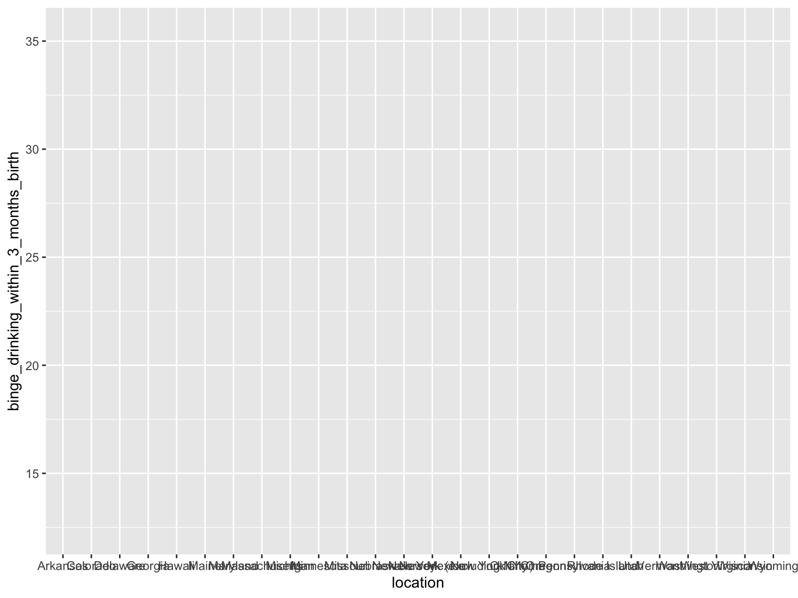
We can see already we’re likely going to want to do a coordinate flip, but let’s save that for later.
Note how we save our plot as an object, p1.
It’s often nice to build plots up, step by step, with p{n} where n is the step number.
Step 3. Geometric Object
- Our x is a categorical variable
- Our y is a continuous variable
It makes sense to use a bar chart.
p2 <- p1 + geom_bar(stat = "identity")
p2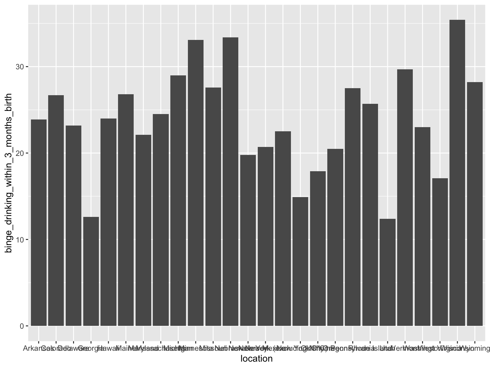
Step 4. Statistical Transformations
- The public 2011 PRAMS data we are using is aggregated at the location level.
- For this reason, we don’t need to do any statistical transformations.
You can imagine data where we have data at the individual level, and we want to aggregate it to the location level, we’d need to use an aggregation function. I’ll show this below with simulated data.
Step 5. Adjust Fine Details
Coordinate Flip
First, let’s flip the coordinates.
p3 <- p2 + coord_flip()
p3
That looks a lot better.
Fixing Labels
Right now, the labels are reverse alphabetical. Let’s fix that.
p4 <- p3 +
scale_x_discrete(limits = rev(levels(df_binge_location$location)))
p4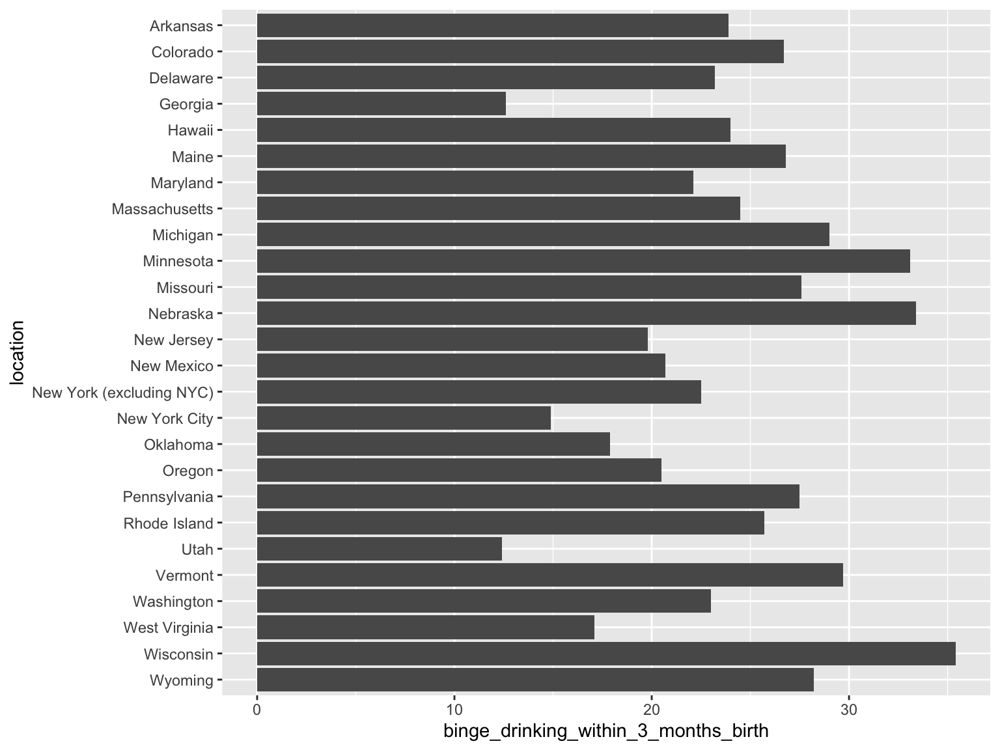
We might also consider sorting by the rate of binge drinking.
p5 <- df_binge_location |>
mutate(location = fct_reorder(location, binge_drinking_within_3_months_birth)) |>
ggplot(aes(x = location, y = binge_drinking_within_3_months_birth)) +
geom_bar(stat = "identity") +
coord_flip()
p5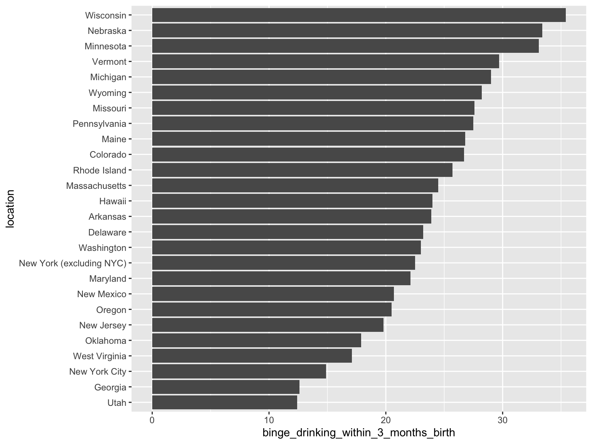
Ah – something of an insight!
Labels
Our labels are not great. We actually do not need the location names, but we need to label the x-axis and give it a title.
p6 <- p5 +
labs(
x = NULL,
y = "Percent",
title = "Binge Drinking Before Pregnancy",
subtitle = "Percentage of mothers who reported binging drinking in the 3 months before pregnancy"
)
p6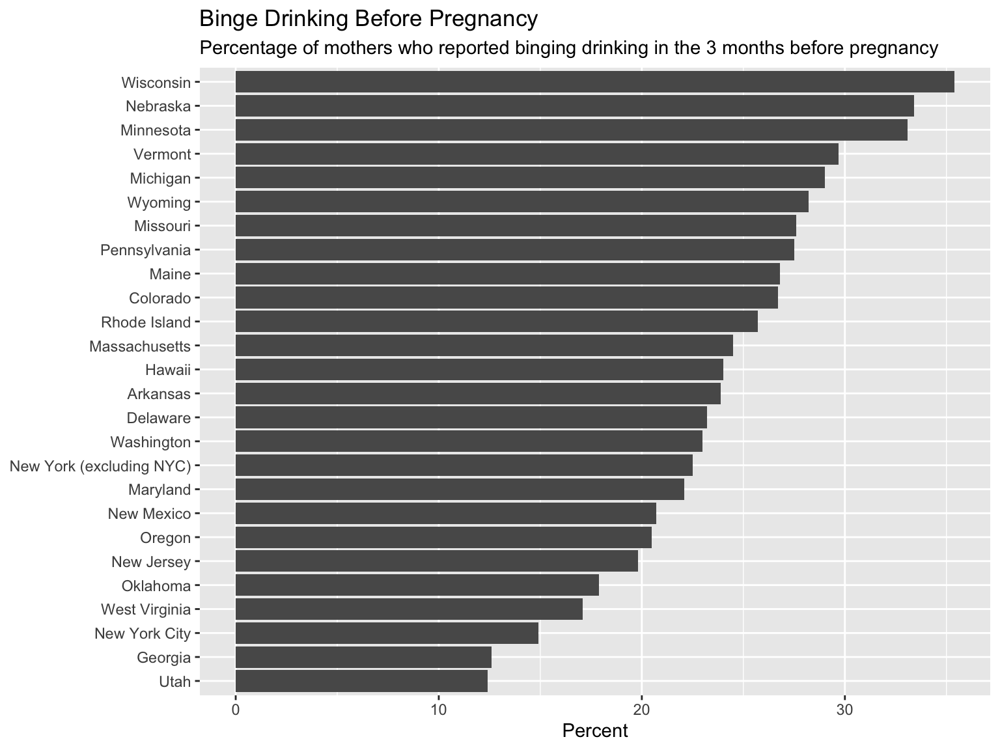
You can consider where to put the necessary description. Possible options:
- title
- subtitle
- caption
- x-axis or y-axis labels
Above, I opted for the subtitle.
Theme
I find the minimal theme to be a good starting point.
p7 <- p6 +
theme_minimal()
p7Gridlines
Here, the horizontal gridlines are not helpful. (Remember, we used coord_flip() above, so we need to “flip” the gridlines.)
p8 <- p7 +
theme(
panel.grid.major.y = element_blank(),
panel.grid.minor.y = element_blank()
)
p8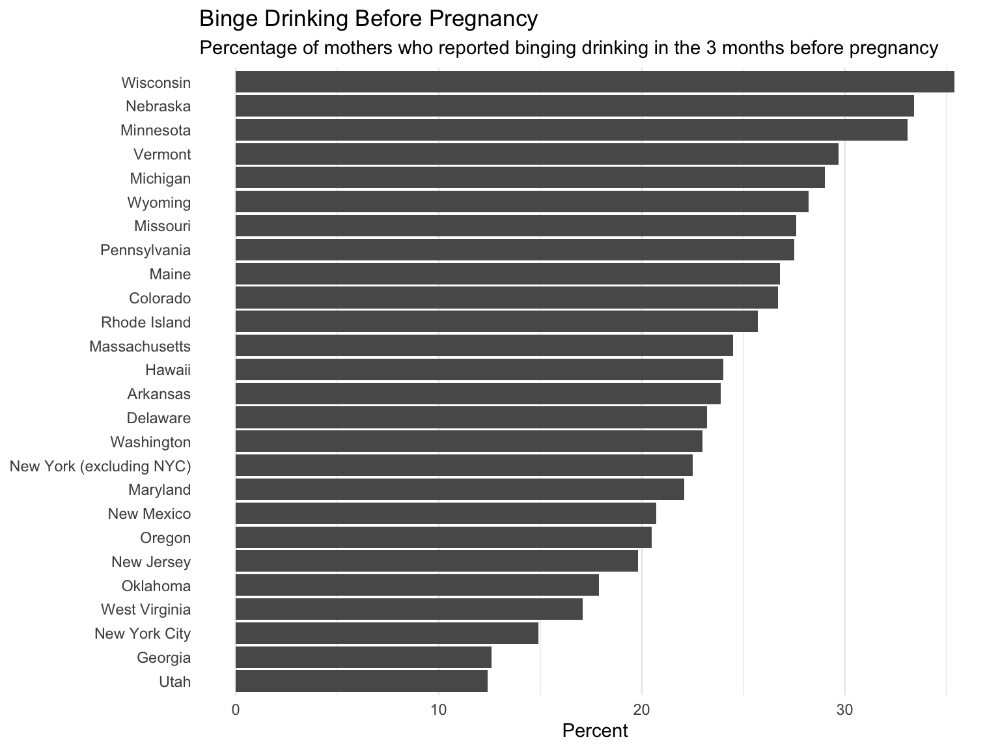
Let’s make the title bold:
p9 <- p8 +
theme(plot.title = element_text(face = "bold"))
p9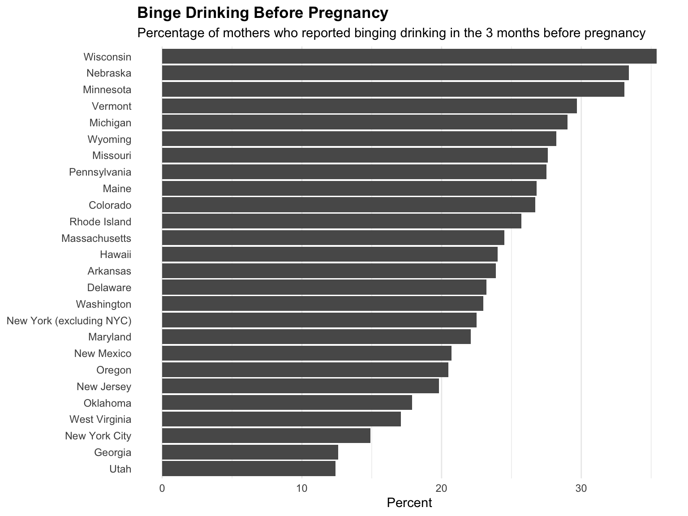
Emphasizing Certain Values
Imagine we were interested in comparing New York with everyone else. We have two New York bars.
We could reduce the opacity of the bars, color the New York bars, and then annotate the specific values.
Let’s start by removing the fill.
Let’s also reset our entire plot so we can see all the steps we took
p_ny <- df_binge_location |>
mutate(location = fct_reorder(location, binge_drinking_within_3_months_birth)) |>
ggplot(aes(x = location, y = binge_drinking_within_3_months_birth)) +
geom_bar(
stat = "identity",
aes(fill = location %in% c("New York (excluding NYC)", "New York City"))
) +
scale_fill_manual(values = c("TRUE" = "red", "FALSE" = "lightgray")) +
coord_flip() +
theme_minimal() +
theme(
panel.grid.major.y = element_blank(),
panel.grid.minor.y = element_blank(),
legend.position = "none" # Remove the legend since we don't need it
) +
labs(
x = NULL,
y = "Percent",
title = "Binge Drinking Before Pregnancy",
subtitle = "Percentage of mothers who reported binging drinking in the 3 months before pregnancy"
) +
theme(plot.title = element_text(face = "bold"))
p_ny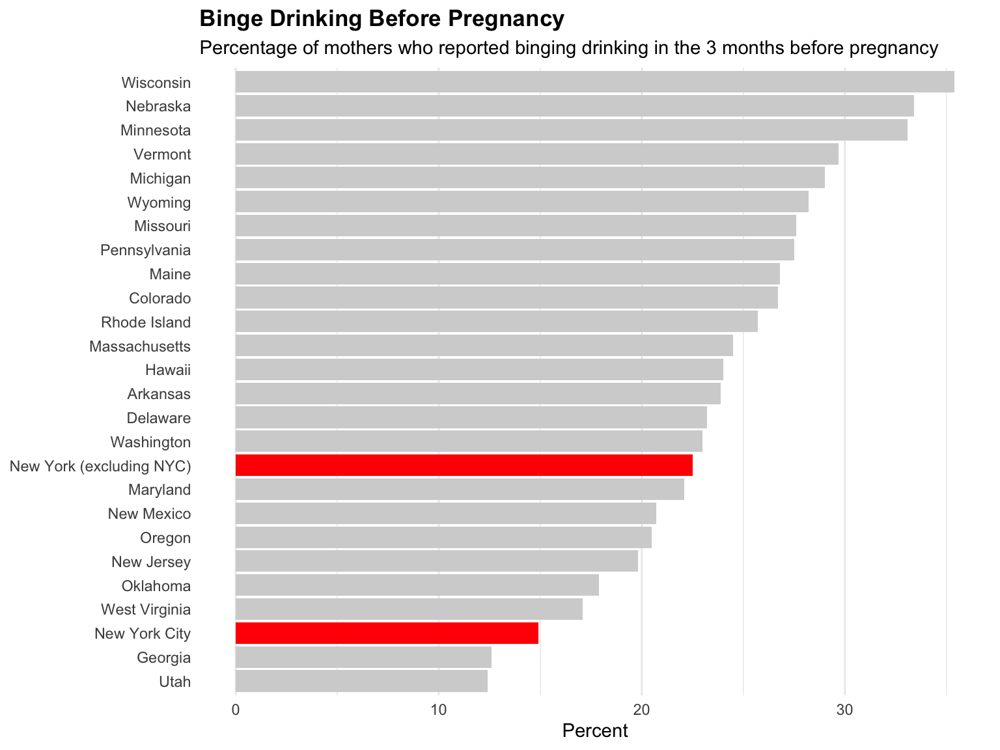
Convert to Lollipop Chart
I feel the gray is too overwhelming and the red is too bright. We can convert it to a so-called lollipop chart. The information is the same, but for many bars this can look cleaner.
p_ny2 <- df_binge_location |>
mutate(
location = fct_reorder(location, binge_drinking_within_3_months_birth),
is_ny = location %in% c("New York (excluding NYC)", "New York City")
) |>
ggplot(aes(x = location, y = binge_drinking_within_3_months_birth)) +
geom_segment(aes(xend = location, yend = 0,
color = is_ny),
linewidth = ifelse(df_binge_location$location %in% c("New York (excluding NYC)", "New York City"), 1.5, 0.8)) +
geom_point(aes(color = is_ny),
size = ifelse(df_binge_location$location %in% c("New York (excluding NYC)", "New York City"), 4.5, 2.2)) +
scale_color_manual(
values = c("TRUE" = "#E63946", "FALSE" = "grey") # Darker red
) +
scale_x_discrete(
labels = function(x) ifelse(x %in% c("New York (excluding NYC)", "New York City"),
paste0("**", x, "**"),
x)
) +
coord_flip() +
theme_minimal() +
theme(
panel.grid.major.y = element_blank(),
panel.grid.minor.y = element_blank(),
legend.position = "none", # Remove legend
axis.text.y = element_markdown(size = 11) # Use markdown for labels
) +
labs(
x = NULL,
y = "Percent",
title = "Binge Drinking Before Pregnancy in New York vs. Other States",
subtitle = "Percentage of mothers who reported binging drinking in the 3 months before pregnancy"
) +
theme(plot.title = element_text(face = "bold"))
p_ny2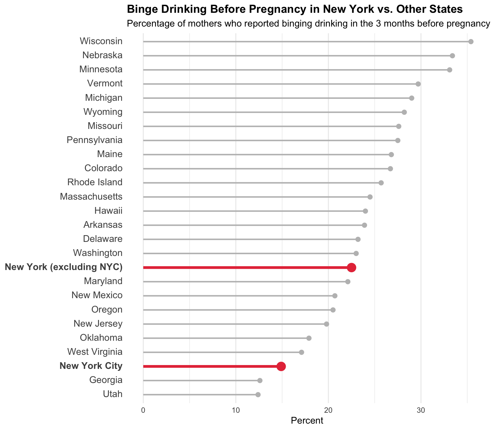
Add Text Annotations
p_ny3 <- p_ny2 +
geom_text(data = df_binge_location |>
filter(location %in% c("New York (excluding NYC)", "New York City")) |>
mutate(location = fct_reorder(location, binge_drinking_within_3_months_birth)),
aes(x = location, y = binge_drinking_within_3_months_birth,
label = paste0(round(binge_drinking_within_3_months_birth, 1), "%")),
hjust = -0.5,
vjust = 0.5,
size = 4,
fontface = "bold")
p_ny3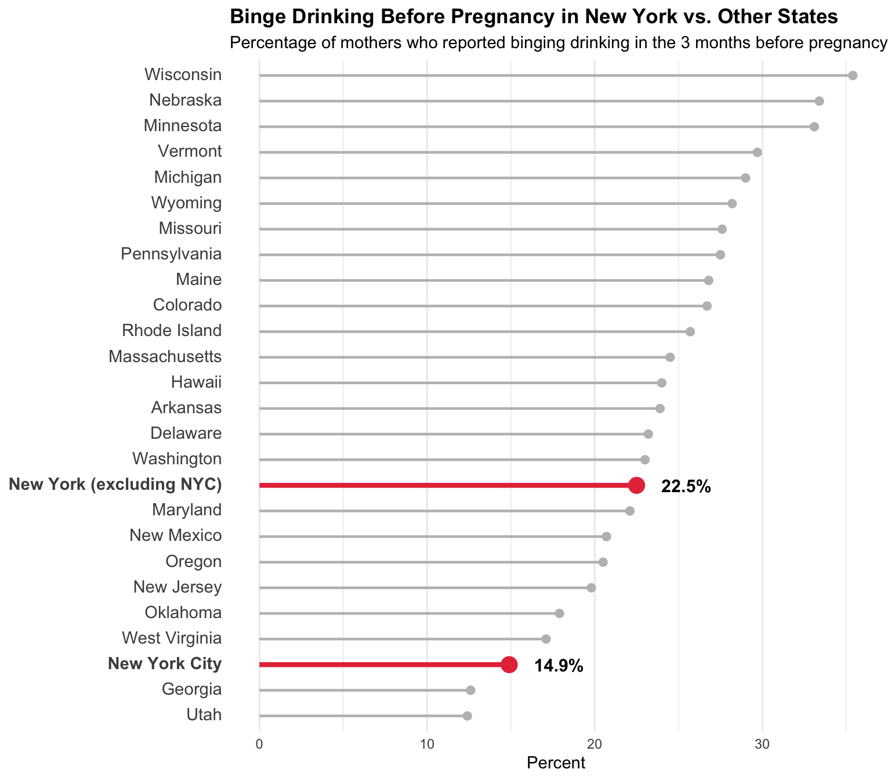
This isn’t perfect, but I think it’s a vast improvement and conveys the message well.
We can also force the scale to 100%; this can sometimes help viewers realize the actual rates.
Force Scale to 100%
p_ny4 <- p_ny3 +
scale_y_continuous(limits = c(0, 100))
p_ny4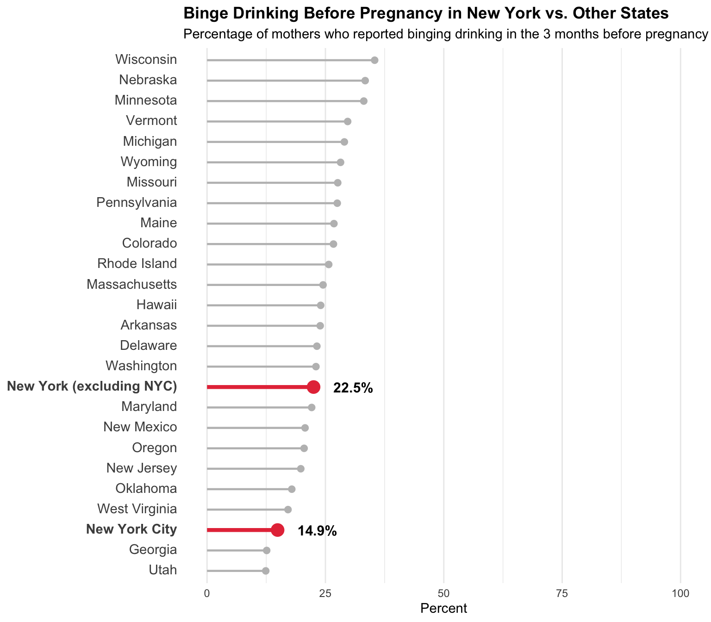
White Space Adjustments
Another final touch: I do not think there is enough vertical space between the title/subtitle and the lines. Likewise, the x-axis labels are a bit too close to the bars.
p_ny5 <- p_ny4 +
theme(
plot.subtitle = element_text(margin = margin(b = 12)),
axis.title.x = element_text(margin = margin(t = 10))
)
p_ny5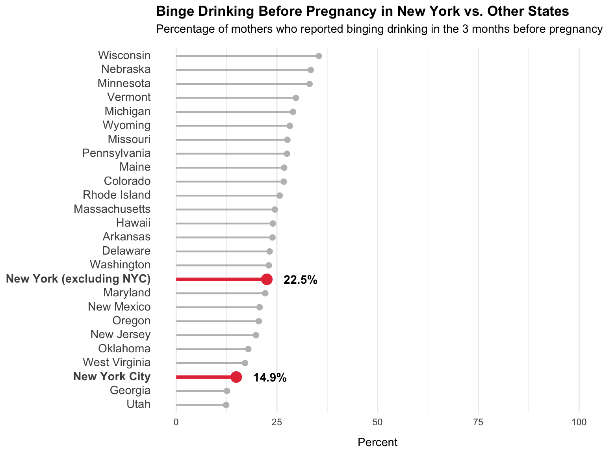